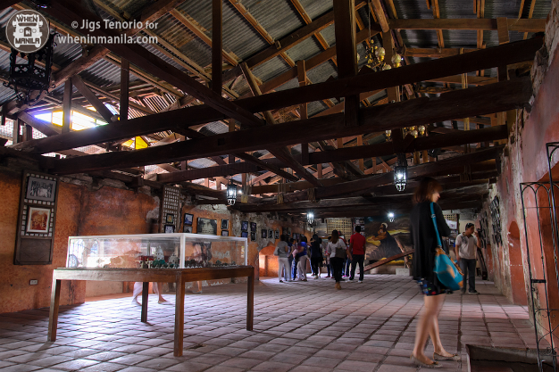
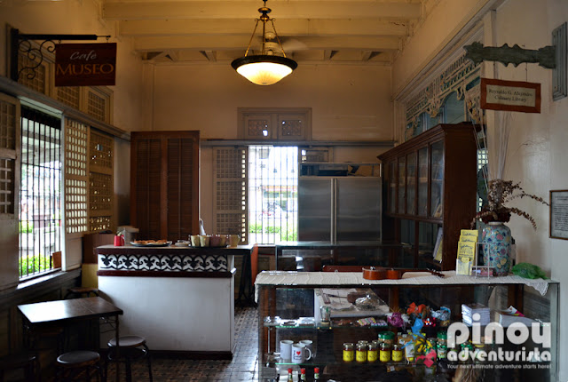
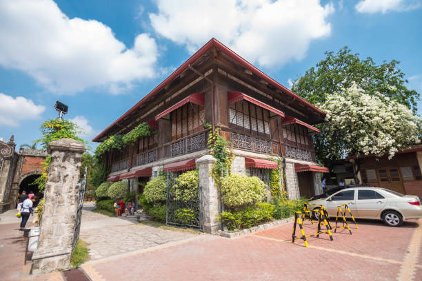
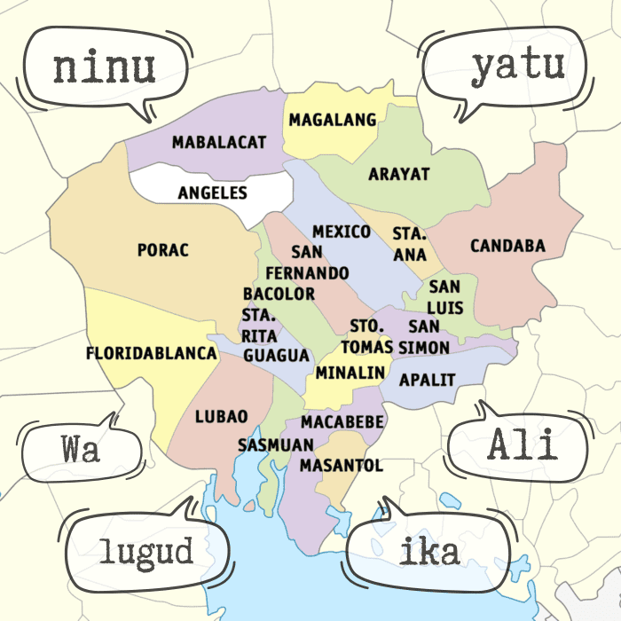
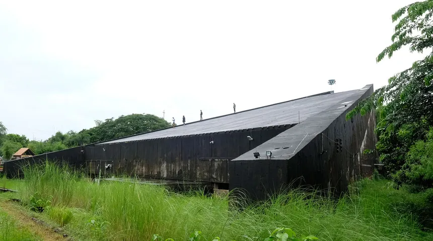
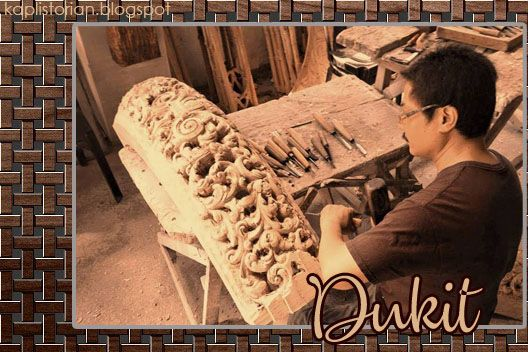

Pampanga's rich history, language, and cultural identity
Kapampangan Identity
Pampanga has been at the crossroads of Philippine history — from the pre-colonial era to the Spanish colonial period, American occupation, and the modern republic. Its people, the Kapampangans, are proud custodians of a distinct language and culture.

A museum in San Fernando that houses artifacts, documents, and exhibits tracing the heritage of the Kapampangan people.

Centuries-old bahay na bato (stone houses) in Bacolor and other towns showcase the domestic architecture of colonial-era Pampanga.

Kapampangan (Pampango) is one of the major languages of the Philippines, with a rich literary tradition and its own unique script.

The town of Bacolor was partially buried under lahar from the 1991 Mount Pinatubo eruption, creating a haunting heritage landscape unlike any other.
Follow a trail of colonial-era churches across Pampanga's municipalities — each with its own story of faith and architecture.
Explore →
From bamboo crafts and lantern-making to woodcarving and silversmithing — Kapampangan artisanship is a living heritage.
Explore →Kapampangans are known throughout the Philippines for their passion, creativity, and fierce pride in their identity. Whether it is through their cuisine, their festivals, their arts, or their language — the Kapampangan spirit is unmistakable.
Learn About Pampanga